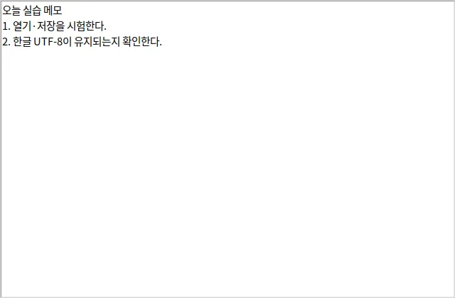

menu = tk.Menu(window)
window.config(menu=menu)
menu.add_cascade(label="파일", menu=file_menu)창 위쪽 메뉴 줄을 만듭니다. add_cascade는 "파일"처럼 펼쳐지는 상위 메뉴입니다.
 인공지능 파이썬 실무
인공지능 파이썬 실무GUI 앱 개발 · 나만의 메모장 만들기 · 실습 1 / 1
열기와 저장을 만드는 동안 1단원의 import와 함수가 다시 등장합니다.
BEFORE THE CODE
새 이름·속성이 코드에 나오기 전에 짧게 봅니다. 외우기보다 역할을 먼저 구별하세요.
menu = tk.Menu(window)
window.config(menu=menu)
menu.add_cascade(label="파일", menu=file_menu)창 위쪽 메뉴 줄을 만듭니다. add_cascade는 "파일"처럼 펼쳐지는 상위 메뉴입니다.
file_menu.add_command(label="열기", command=open_file)메뉴 항목에 함수를 연결합니다. Button의 command와 같습니다. command=open_file()처럼 괄호를 붙이면 창을 열 때 대화 상자가 뜹니다.
tk.Menu(menu, tearoff=False)메뉴를 창 밖으로 떼는 점선을 숨깁니다. 교과서 예제의 흔한 보완입니다.
메뉴를 붙이고 mainloop로 기다린 뒤, 한글 파일을 저장했다가 다시 열어 봅니다. 열기·저장 함수는 앞 단계와 같습니다.
CODE WORKSPACE
Python 실행: 브라우저에서 바로 실행합니다. 문법 확인: GUI 창·카메라·대용량 패키지를 사용하는 PC 실습 예제입니다. 웹에서는 문법만 검사하고, 실제 동작은 내려받아 PC에서 확인하세요.
예측을 적어야 실행할 수 있어요.
실행 엔진은 처음 실행할 때 내려받습니다. 패키지 크기에 따라 최초 준비에 최대 3분이 걸릴 수 있으며 네트워크가 필요합니다. 실행은 최대 30초이며 중지 후 다시 실행할 수 있습니다.
실행할 예제를 선택하세요.
내 예측 ·
실제 출력 ·
예측과 같았나요?
핵심 줄이 무엇을 하는지 자기 말로 써 보세요. 예제·슬라이드 설명을 그대로 옮기면 안내가 뜹니다.
교사 PC에서 실제로 실행해 캡처한 화면입니다. 입력값·환경에 따라 달라질 수 있습니다.

LEARNING JOURNAL